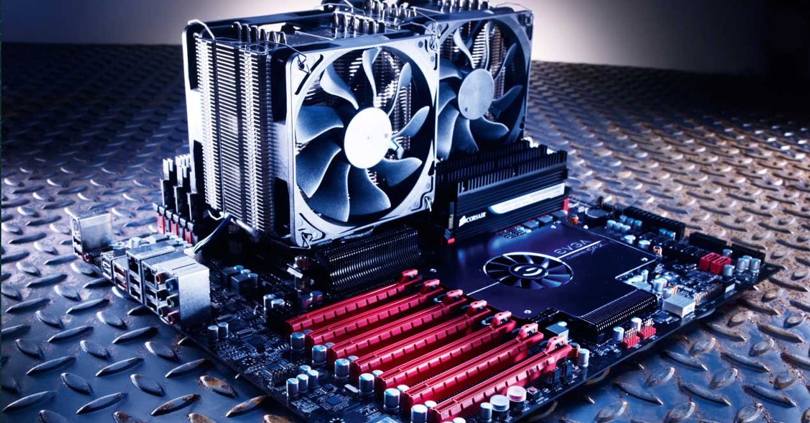

Software

La informatica o computacion es la ciencia que estudia los metodos y tecnicas para almacenar, procesar y transmitir informacion de manera automatizada, y mas especificamente, en formato digital empleando sistemas computarizados.
La informática reúne a muchas de las técnicas que el hombre ha desarrollado con el objetivo de potenciar sus capacidades de pensamiento, memoria y comunicación. Su área de aplicación no tiene límites: la informática se utiliza en la gestión de negocios, en el almacenamiento de información, en el control de procesos, en las comunicaciones, en los transportes, en la medicina y en muchos otros sectores.
Características de la informática La informática puede caracterizarse de la siguiente manera:
- Su objeto de estudio puede resumirse en el tratamiento automatizado de la información mediante sistemas digitales computarizados.
- Se propone tanto el abordaje teórico como el práctico de los sistemas informáticos, aunque no se trata de una ciencia experimental.
- Toma en préstamo el lenguaje formal de la lógica y la matemática para expresar las relaciones entre los sistemas de datos y las operaciones que estos ejecutan.
- Es una de las disciplinas científicas más jóvenes, surgida formalmente en la segunda mitad del siglo XX.
¿Para qué sirve la informática? La informática tiene como propósito clave el almacenamiento y la recuperación de información, lo cual ha sido una de las preocupaciones clave de la humanidad desde el inicio de los tiempos. En ese sentido, el primer sistema de almacenamiento fue la escritura misma, que permitía codificar mensajes y recuperarlos luego a través de marcas sobre una superficie.
Vista así, la informática ha llevado ese mismo principio al máximo, creando sistemas y aparatos que almacenen, produzcan, transmitan y reproduzcan información de manera masiva, eficiente y veloz. No en balde la informática interviene hoy en día en prácticamente todos los demás campos del saber de un modo o de otro.
Importancia de la informática La importancia de la informática hoy en día no podría ser más evidente. En un mundo hipertecnologizado e hiperconectado, la información se ha convertido en uno de los activos más preciados del mundo, y los complejos sistemas informáticos que hemos construido nos permiten administrarlo de manera más veloz y eficiente que nunca antes en la historia.
La computación es una de las disciplinas de mayor demanda en el mercado universitario del mundo. Tiene la mayor y más rápida salida laboral, dado que casi ningún aspecto de la vida cotidiana se mantiene al margen todavía del mundo digital y de los grandes sistemas de procesamiento de información.
La big data (o “gran información”) que nuestros dispositivos reúnen de nosotros es evidencia de ello: vivimos realmente en la era de la información, y la informática entonces no podría ser más importante.
Conceptos basicos de informatica Existen dos conceptos importantes en el area de informatica que debes conocer, los cuales son: